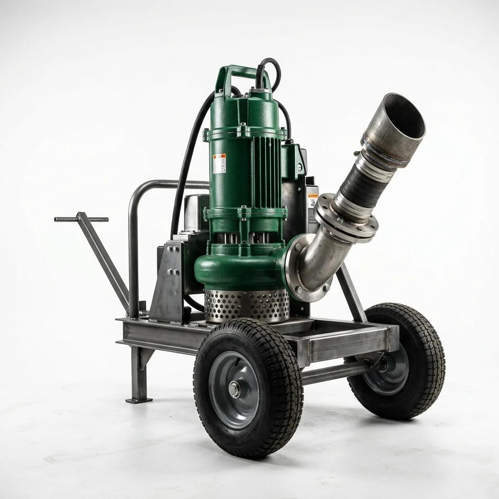
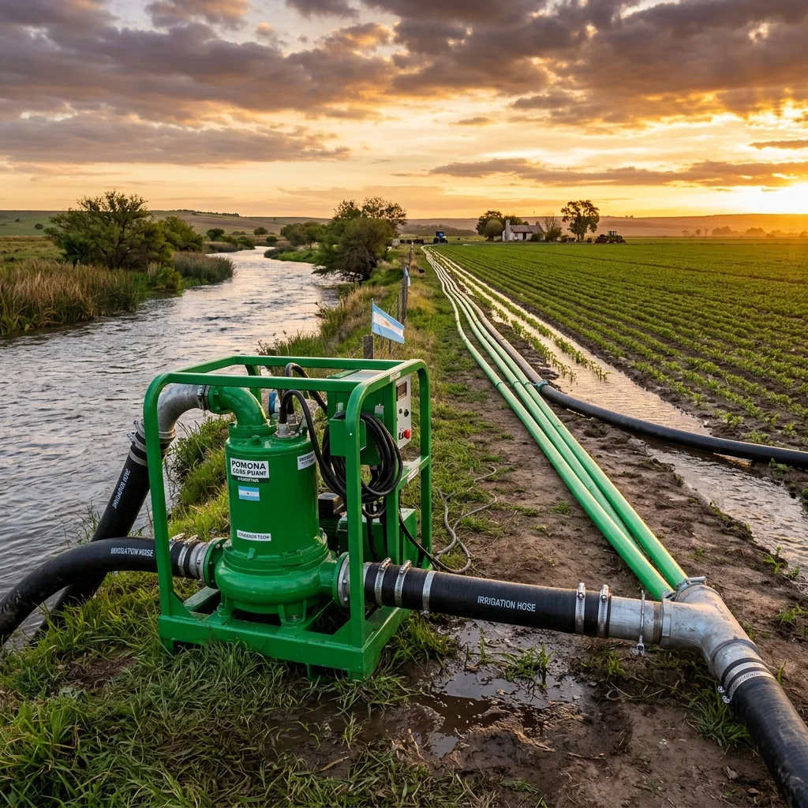

Grasa es Vida
Las crucetas del cardán y los rodamientos necesitan grasa todos los días de uso. 5 minutos de engrase te ahorran un repuesto caro.

No necesitás un mecánico ni un manual de 50 páginas. En minutos tu bomba está trabajando.
Las hicimos simples a propósito. Cualquier persona con experiencia básica en campo puede ponerla a funcionar.

Llevá el equipo hasta la orilla del río, canal, laguna o zona inundada. Meté la turbina al agua hasta que la caja del rotor quede tapada. Con eso ya alcanza.
Ojo: Elegí un piso firme para apoyar el chasis. Si el barro está blando, poné unos tablones debajo.
Clavá estacas en los agujeros del chasis o atala al tractor con cadena. La idea es que no se mueva ni un centímetro cuando empiece a bombear.
Ojo: Si estás en la orilla de un río con corriente, asegurala doblemente. El agua tiene mucha fuerza.


Poné el caño de salida apuntando para donde querés mandar el agua. Despueás conectá el cardán al tractor (o al motor), buscando que quede lo más derecho posible.
Ojo: Aprietá bien todas las bridas antes de arrancar. Una unión floja es presión que perdés.
Dale RPM bajas primero. Fijate que todo esté firme, que la grasa esté donde tiene que estar, y recién ahí subí la velocidad hasta llegar al caudal que necesitás.
Día a día: Engrasá crucetas y rodamientos todos los días mientras la usés. Cuando terminés la jornada, dale una lavada rápida con agua limpia.

Las crucetas del cardán y los rodamientos necesitan grasa todos los días de uso. 5 minutos de engrase te ahorran un repuesto caro.
Cuando terminás de usarla, echale agua limpia encima. El barro y la arena se meten en las juntas y desgastan todo.
Nunca le metas RPM al máximo de arranque. Empezá suave, dejá que el agua fluya, y ahí sí subí la aceleración.